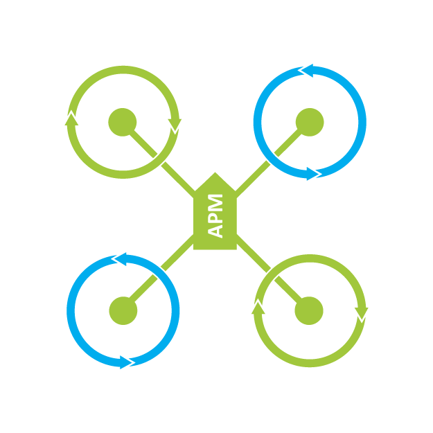

ArduPilot Firmware builds
These firmware builds are automatically generated by the ArduPilot autotest system.
License
This program is free software: you can redistribute it and/or modify it under the terms of the GNU General Public License as published by the Free Software Foundation, either version 3 of the License, or (at your option) any later version.This program is distributed in the hope that it will be useful, but WITHOUT ANY WARRANTY; without even the implied warranty of MERCHANTABILITY or FITNESS FOR A PARTICULAR PURPOSE. Â See the GNU General Public License for more details.
For details see http://www.gnu.org/licenses/gpl.html
Safety
Operating a powered vehicle of any kind can be a lot of fun. However, nothing will ruin your day at the park more quickly than an accident or running afoul of the law. Since we want you to have a great experience, please make sure that you do all of the following:- Operate within all local laws and regulations. For example, in the United States, current regulations require you to operate most UAVs under 400 foot above ground level, within line of site, and away from obstructions and populated areas. Since these regulations vary from place to place, even within the same country, ensure that you understand what you need to do to stay compliant.
- Never operate the vehicle or software in a way that could be dangerous to you, other people, or property. Propellers, while rotating, could easily cut you; if a UAV fell on a person or object, it could cause a lot of pain and damage; a UAV caught in power lines could cause an outage for many people. As Ben Franklin said, "An ounce of prevention is worth a pound of cure."
- Always keep in mind that software and hardware failures happen. Although we design our products to minimize such issues, you should always operate with the understanding that a failure could occur at any point of time and without warning. As such, you should take the appropriate precautions to minimize danger in case of failure.
- Never use the software or hardware for manned vehicles. The software and hardware we provide is only for use in unmanned vehicles.
Firmwares
 Plane - for fixed wing aircraft
Plane - for fixed wing aircraftCopter - for multicopters and traditional helicopters
 Rover - for land vehicles and boats
Rover - for land vehicles and boats
Sub - for ROVs and underwater vehicles
Antenna Tracker - for antenna tracking of ArduPilot vehicles
 MissionPlanner - Mission Planner tool
MissionPlanner - Mission Planner tool
APM Planner 2.0 - APM Planner 2.0 tool
 SiK - 3DR Radio Firmware
SiK - 3DR Radio Firmware
 Tools - Build and development tools
Tools - Build and development tools
DevBuild - Developer builds
 Companion - Companion Computer example code and Images
Companion - Companion Computer example code and Images
AP_Periph - UAVCAN Peripheral Firmware
Types of firmware available
To choose a firmware to download you need to choose:- The type of board that you have
- Whether you want the stable, beta or latest version of the firmware
- Whether you want a HIL (hardware in the loop) image
- stable - this is the version recommended for new users. It has had the most testing
- beta - this is the firmware to choose if you want to be part of beta testing of new versions prior to release as a stable version. Note that during some development times the beta release will be the same as the stable release
- latest - this is the latest version from our git source code repository. This version is only for developers. The code may have unknown bugs and extreme care should be taken by anyone using it
Load your firmware using Mission Planner
- You can load the stable version of the firmware by selecting the appropriate icon for your airframe from the Firmware Tab.
- You can load the beta version of the firmware by selecting the "BETA firmware" button in the bottom right corner of the screen and then the appropriate icon.
- You can load the latest version of the firmware by downloading a firmware image from one of the links and selecting the "Load custom firmware" button in the bottom right corner of the screen.
Loading firmware on Linux or MacOS
To load a firmware on a Linux or MacOS machine you will need to use the uploader.py python script. You can run it like this:python Tools/scripts/uploader.py --port /dev/ttyACM0 build/fmuv4/bin/arducopter.apjAfter starting the script, press the reset button on your device to make it enter bootloader mode.